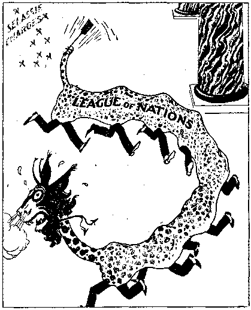
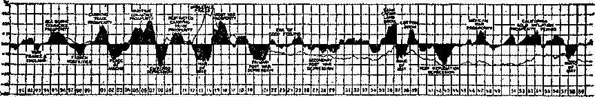

Niagara Falls, Canadian side

1938
Consolation
Magazine
Contents ’
Tobacco, Aspirin, Aluminum
The New Government
Big Business
Counsel by J. F. Rutherford
Foods—Canned Goods, Prune Pie, etc.
Under the Totalitarian Flag
British Comment
Published every other Wednesday by
THE GOLDEN AGE PUBLISHING COMPANY, ING. 117 Adams St., Brooklyn, N. ¥.( U. 3. A.
President Clay ton J, Wood worth
Vise-.President Nathan H. Knorr
Secretary and Treasurer Charles E. Wagner
Five Cent* a Copy
a year in the United States
$1.25 to Canada and all other countries
NOTICE TO SUBSCRIBERS
Remittances; For your own safety, remit by postal or express money order. When coin or currency Is lost tn the ordinary mails, there ie no redress. Remittances from countries other than those named below may be made to the Brooklyn office, but only by International postal money order.
Receipt of a new or renewal subscription will bo acknowledged only when requested. Notice of Expiration is sent with tho journal one month before subscription expires. Please renew promptly to avoid loss of copies. Send change of address direct to us rather than to the post office. Your request should reach us at least two weeks before the date of issue with which it is to take effect. Send your old as well as the new address. Copies will not be forwarded by the post office to your new address unless extra postage is provided by you.
Published algo in Bohemian, Danish; Dutch, Finnish, French, German, Greek, Japanese, Norwegian, Polish, Portuguese Spanish. Swedish Hungarian. Ukrainian
OFFICES FOR OTHER COUNTRIES
England 34 Craven Terrace, Doudon, W, 2
Canada 40 Irwin Avenue, Toronto 5, Ontario Australia 7 Beresford Road, Strathfield, N.S*W, South Africa 623 Boston House, Cape Town
Entered as second-class matter at Brooklyn, N, Y,, under the Act of March 3, 1879.
Appetizers
Jokes from Britain
B Guard: “Look here, sir, if this train is so jolly slow, you’d better get out and walk.”
Passenger: “That’s kind of you. I may be short of time, but I’m not in quite such a hurry as that.”
® Teacher: “Johnny, suppose you had ten apples and ten oranges and gave nine-tenths of them to some other hoys, what would you have ?”
Johnny: “I’d have my head examined!”
■ “Are you sure this man was drunk ?” asked the magistrate.
“Well, sir,” replied the policeman, 'Tie sat for two hours beside a hole in the road waiting for the -red light to turn green!”
■ Excited young father: “Quick! Tell me!
Is it a boy?” * .
Nurse: “Well, the one in the middle is.” —Tit-Bits.
■ “Well, this is good news, any’ow. Me daughter’s written to say she’s got a reg’lar job at last, as bridesmaid to a film-actress at ’Olly-woodTit-Bits.
■ “Now, when we erose the road, my dear,” said the old lady to her friend, “don’t look round, because if a motor hits us in the back it’s their fault, not ours Tit-Bits.
■ Town boy (visiting farm for first time): “What do geese live op?”
Second ditto: “Why, sage and onions, of course!” '
■ “The time will come,” shouted the speaker, “when women will get men’s wages!”
/Wes,” said a little map in the corner, “next Friday night.”
■ Culprit: “It may ’ave bin five or six,, or ' even seven o’clock. I’ve got no idea of time.” Magistrate: “FTmII may be able to give
you some.”
■ “I always laugh when I see anything funny.” “You must enjoy yourself when you shave.”
“And in His name shall the nations hope.”—Matthew 12:21, A.R.V.
Volume XX Brooklyn, N. Y.F Wednesday, October 5, 1938 Number 49?
Tuberculin Testing of Cows
( Eugene Underhill, M.D., Phila-j delphia, in the leading article in J the Homeopathic Recorder for Octobcr 15, 1924, says:
' “In the study of the effect of cows’ milk upon children, we have had some reason to believe that milk from tuberculin* tested cows may not always be as good for children as milk from healthy cows not so tested.”
He believes after long study of the subject that “the tuberculin testing of cows is not the panacea claimed, either for the purification of the milk supply or as an economic factor in establishing and preserving the health of the bovine”.
A Factor in Spreading the Disease
He quotes Dr. Veranus A. Moore, dean of the New York State Veterinary College at Cornell University, as saying, “During- the last ten years tuberculosis in cattle has been spreading”—“and this [says Dr. Underhill] in spite of the herculean efforts put forward along the tuberculin testing line. There is good reason for believing that the test itself may be a factor, if not the chief factor, in the spread of the disease.”
Haze and Doubt
The literature advocating the test is filled with “haze and doubt”, he notes, “especially in respect to its effectiveness, while the influence of the milk of the tuberculin-tested cows appears to have been overlooked altogether.”
Dangerous to the Livestock industry
As is well known, county agents and Government veterinarians sent out to sell the idea to farmers are enthusiastic and keen for its adoption, but when the Department of Agriculture sets down the case in cold black and
OCTOBER 5, 193B white, damaging admissions are made. Circular No. 249 of the Department has this:
“In the hands of unscrupulous persons it is a danger to the livestock industry of the nation, because it is known that some animals may be so frequently treated with tuberculin as to establish a tolerance against its action, or, in other words, they lose their sensitiveness to its action.”
Again the circular says:
“It is obvious that sound judgment and diplomacy on the part of the veterinarian are ■essential tb success in testing animals with tuberculin.” .
In other words, unless the testers are “sound of judgment” and “diplomatic”, the thing is here conceded a dead failure, observes Dr. Underhill. ’
Further Official Uncertainty
Three methods for applying the test are described in the circular mentioned; namely, the subcutaneous, the intradermic and the ophthalmic, and it adds:
“As has been stated, each method and each combination (of methods) has certain advantages, and there are times when one should be used in preference to another.” .
“When are the times, and who is to pick them out with certainty ?” asks Dr. Underhill. More “diplomacy” is evidently required.
Circular 249 states that frequent testing of cows establishes a tolerance to tuberculin so that they do not react, resulting in leaving diseased eattle in the herd.
On the other hand, says the circular, animals may be erroneously classified as reactors “when a slight thermal disturbance may be due to other causes”, and healthy animals are then condemned as diseased.
If the test' may leave diseased cattle in the herd and throw out healthy animals, of what good is it? -
Pure Guesswork
Other speculative doubts are contained in the circular, among them this:
“Sound judgment should be used in classifying animals, the previous history of the herd relative to infection being taken into consideration in classifying very small swellings. The ability to make these distinctions is by some Called intuition.” (Our caps.)
In the current vernacular, “hunch” in the mind of the veterinaries is a necessary part of this wonderful test.
Deliberate Official Trickery
is more than hinted at in the following from the same circular: .
“Only such animals as have failed to give a typical reaction to the other two methods should be injected with subcutaneous tuber-eulin. This is because it has been shown in many instances that certain reactors to other tests used in combination do not react again when the subcutaneous test has been used as a eheck. Therefore, to avoid confusing the operator, and possibly the owner, as to the accuracy of tuberculin, its use is not advised upon known reactors.” •
. Read that again and notice:
1. The animal is to be shot with tuberculin until she reacts. Do you get that? And all it means ?
2. Don’t let the owner see that the test is really not “accurate”. Keep him dancing to the jig-time tune of a big bluff, or the farce may suddenly end.
Keep Owners Away from Post-Mortems
Owners are al$o to be kept at a safe distance from all post-mortem examinations, for ' the reason that in many cases no discoverable lesion of a tuberculous nature can be found.
Re-Testing increases the Uncertainty
, Although the Department of Agriculture advises retesting six months after the first test, and thereafter once a year, the Department’s Farmers’ Bulletin No. 1069 has this:
“Tuberculin by its immunizing property, can cause tuberculous animals to fail to respond to its application at another time.”
Dr. Underhill comments: “If the cow is not sufficiently devitalized by the first few tests, the attempt should be made every year during her life. She may at any time develop tuberculosis, but it may not be discoverable by this test,” owing to the .tolerance produced in her system by the repeated injections of tuberculin. Of course, if tuberculin were a true preventive of the disease, reactors would not be found on re-tests.
Unreliable and Impossible
“The present scheme, therefore [says Dr. Underhill], for the elimination of tuberculosis among cattle is unreliable and impossible. It is a destructive and killing process. All reactors are headed for the slaughterhouse; the major portion of the carcasses to be used for human food—tuberculosis notwithstanding!”
Simply Dealing with Results
“The second and third tests [he continues] show more reactors in the same herd; they follow the course of the first lot. The process is kept up until either the entire herd is slaughtered or a few have been found that resist the effects of the test. ■
“This killing process is simply dealing with results. Whatever was operating to produce tuberculosis among cattle is still operating.
“It has been found that some animals that do not react may have tuberculosis in its worst form. The uncertainties surrounding the test are so many and so confusing as to nullify whatever diagnostic value it is supposed to have; whereas, its harmful effects are certain and the economic loss of tremendous proportions.”
Some Doctors and Stockmen Summarized
“Interviews and wide correspondence with physicians, veterinarians and prominent dairymen bring forth observations which may be summarized as follows:
“1. Tuberculin testing of cows tends to devitalize the animal, and while she may possibly be rendered immune to tuberculosis, she is more susceptible to other diseases.
“2. The animals require better care to protect them from diseases of various kinds.
“3. The milk of such cows does not contain the life-giving elements which characterize the milk from healthy, non-tuberculin-tested cows.
“4. In many instances the test does not succeed.
“5. Some cows having tuberculosis, being immune to the test, do not react.
“6. There are many possible errors in technique which may nullify the reactions.
“7. Tuberculin testing does more harm than good.
“8. It is a political graft and merely gives
CONSOLATION occupation to. large numbers of political jobholders.
“9. It is a nuisance and an unjustifiable expense to stockraisers and dairymen.
“10, Tuberculosis develops and spreads more on account of improper care and ventilation than it does by contact with tuberculous animals.
"11. Ventilation, cleanliness, and excluding from the herd cows that- do not appear from ordinary signs to be healthy and productive, are of .more value than all the tuberculin testing.”
A Devitalizing Process
Dr. Underhill declares the test “may prove devitalizing and destructive to health in many subtle and unbbserved ways”.
- He comments on the contention that tuberculin can do no harm because it is sterile, saying that any foreign substance made sterile and plunged into a cow's body and left there long enough will set up conditions that devitalize the cow and eventually contaminate the milk supply.
"The tuberculin-tested cow is something different—a departure from nature.
“Study the product, milk, rather than devitalize the producer.”
Essentials Lost Sight Of
lie then urges scrupulous cleanliness on the part of the milker and milk handler.
“Next would come a careful observation of each cow in the herd and isolation of those showing signs of indisposition or disease of any kind. A little training in bovine symptomatology would soon qualify any intelligent dairyman to eliminate undesirable animals. So much emphasis has been placed on tuberculin testing, the vital and essential things have been largely overlooked.”
One-tenth of the energy and outlay, he thinks, rightly directed, woutd give us a healthy bovine stock, a superior milk supply, and a saving of what is ?ow a staggering economic loss.
Planting Disease in the Cow
"It is well known,” he states,' “that< a cow that does not react this year may react n’ext year. May not the test' have so lowered the vital resistance as to cause that reaction ?
“Those not reacting may nevertheless have their physical powers so taxed in resisting the effects of the test as to impair their vitality. It is like planting an infectious disease in the cow. Tuberculin-tested cows require more care and better protection from the weather and other adverse conditions than healthy nontested cows; it is therefore evident they have less resistance and consequently less vitality.
Affecting the Milk Supply
tfMilk as a food for children is chiefly val- -uable on account of its reconstructive and vitalizing power. The cow cannot impart to her milk life-giving elements which she does not possess. If her physical powers are in any way impaired, the value of her product is correspondingly diminished.
“Any disease or circumstance that acts profoundly upon the human mother may not materially affect the nursing child. On the other hand, when the mother is not markedly affected, the child maj- be quite profoundly'” affected. As a general’ rule, when the mother suffers (from such adverse circumstance) the child escapes; when the mother escape's, the child suffers.
“When the cow, therefore, reacts, that is, suffers in her own body the effects of tuberculin-testing, she goes to the block. 'When she does not react, she to a large extent passes certain subtle and harmful effects on to her foster-children of the human race.
“The object of tuberculin-testing is to purify the milk supply, but did anyone ever purify a stream by poisoning its headwaters ?”
Paying the Price
“If the cow reacts, she pays the price with her life; if she does not react, humanity pays the price with a vitiated, devitalized, disease-producing milk supply, which is a threat of disaster to every child brought into the world; and in that threat is the very disease which tuberculin is supposed to eradicate.”—American Medical Liberty League, Ine.
[Consolation is glacf to give space to the foregoing article and appreciates its sane and sound outlook. The Scriptures furnish evidence that milk is an important article of diet, ineluding milk products, such as butter and cheese. It seems too bad that meddling human busybodies must contaminate and befoul everything that God has made before they consider it fit for the consumption of mankind. If such men limited their experiments to things they themselves eat and drink, one would feel less disposed to tell them to jump into the lake, but when they insist on foisting their crazy notions on all; and sundry it is "time somebody said and did something about it. Sound sanitary measures do not require the introduction of filth into the systems of either animals or humans.—Ed.] '
♦ If tobacco in its various forms is harmful, why do we not read about the dangers of smoking, chewing and snuff-taking in our daily papers? Why were we not taught as children, and why are our children not taught today, that the use of tobacco in this way is not only detrimental to health, but degrading and disgusting, as well as conducive to the forming of other bad habits?
The answer to these questions is to be found in each issue of your newspaper. Tobacco merchants are, by their advertisements, among the chief supporters of the press andt as you know, or should know, the policy of 6ur newspapers is dictated by their advertisers. A journal such as Consolation, however, has no advertisers to consider, and in the interests of its readers can and (Joes publish the truth on subjects such as this.
Do you remember your first whiff? With a few other youngsters you met in secret to show one another what fine fellows you were. How you had been looking forward to the event! But what a disappointment! It was not as you expected. Your eyes smarted, an unpleasant odor assailed your nose, and your vision became clouded, not merely because of the smoke you were producing, but because your nerves bad become unbalanced and the normal functions of your body had become disturbed. Your legs became weak and there was a buzzing sensation in your ears. But you were too busy attending to the protests of an outraged stomach to feel regretful. To have confessed the truth wduld have been a disgrace; so you, like the fool you were, repeated the performance. After so unpleasant an experience surely nobody but a fool would desire to acquire the vicious halfit of smoking! But taunts and jeers are hard to bear, and after the second and third attempts the effects were not so noticeable. The system had an opportunity to tune itself up—to set up a defensive mechanism against this violation of its normal routine. By the time you were smoking your tenth cigarette you felt quite proud of your ability.
Modern athletics demand the very highest state of physical fitness, and almost without exception the use of tobacco is forbidden to athletes in training. Nicotine has the same properties as opium, morphine and heroin and, so far as is known, no athletic champion has used things like these to prepare him for the contest. Although the mental stat e of many is so low that they believe that certain cigarettes ar<> “specially made to prevent sore throats”, they have not, as yet, been asked to accept the statement that so-and-so’s cigarettes guarantee endurance, are a lung tonic, or “build bonnie babies”.
Nicotine exercises such a harmful influence on the nerves that it eventually prevents defensive reflexive action and the drug-laden smoke has easy access to the breathing and digestive tracts. The cells that compose the nerves are deadened to the point of paralysis, and, as there is no other agent to resist the tobacco fumes, the poison begins to accumulate where it will do the most harm. But apart from nicotine, which is the chief cause of the trouble, prussic acid, ammonia, sulphuric acid and benzol play their part in undermining the constitution; and from the burning paper of a cigarette carbon monoxide is produced. If an infinitesimal amount of nicotine is injected into the nerve which regulates the heart-beat, this nerve immediately becomes paralyzed and, since there is no check, cardiac action is greatly increased. The normal heart beats 72 times per minute; but under the influence of tobacco this rate increases to between 90 and 150, or even higher. Such violent action can have but one effect: the weakening of the organ and ultimate diseases.
Everybody knows the fatal potency of prussic acid; and the more slowly your cigarette bums, the more prussic acid it contains. Carbon monoxide affects particularly the red blood cells, preventing them from discharging their function of distributing oxygen throughout the body.
Nicotine is responsible for dyspepsia in various forms, disturbing the digestive system, causing loss of appetite and frequently resulting in serious loss of weight. Tobacco reduces resistance to infection, provokes hardening of the' arteries, and may be a cause of tuberculosis, as bronchitis and chronic laryngitis, frequently forerunners of tuberculosis, are common among smokers.
The present writer has known several fatal eases of cancer on the tongue. In each instance the question was asked, “Did he smoke a pipe?” and the answer was the same in each case. This
is not suggesting that nicotine was the direct cause of the cancer in each case, but that the irritation caused by the pipestem, particularly in the cases of cancer on the tongue, sowed the first seeds.
It is admitted that many smokers live to a ripe old age and that some of the Tyrolean Alpine guides, noted for their endurance and feats of skill, are incessant smokers. Such instances can, however, be well matched with cases of violent stomach disturbances and fatal eases of poisoning. Recently in London a young girl died as the result of smoking her first cigarette.
Physical organisms differ, and there is a grain of truth in the proverb, “What’s one man’s meat is another man’s poison.” Some people have even used aluminum for many years without noticing any ill effects; but these are rare exceptions. One thing, however, is certain: toxic influence is present when tobacco is used, and inability to resist disease is certain to be produced eventually.—James A. Williams, Lithuania.
The Craving for Tobacco
♦ When I was seventeen years of age I was engaged in cutting mining timber high up in the mountains of Colorado. During the winter the mountains were covered with snow and drifts twenty feet deep were frequently formed while the great snow storms were sweeping over the mountains. One cold night when the snow was more than knee-deep all over the landscape and in some places the great drifts covered even the tops of the smaller pine trees, I sat by a roaring fire reading. I was so interested ih my book that I did not realize that it was nearly midnight, when I laid it aside and began to get ready for bed. The wind was rattling the doors and windows and piling the snow almost to the eaves on the north side, when I heard a knock at the door. “Come in,” I called, and a young man who lived in a lonely cabin in the timber about a mile away came stamping in, brushing the snow off his clothing. His first words were: “Have you any tobacco?” and when I told him I did not use it, he smiled ruefully an’d said: “Then I must go down to Sunset, for I have got to have some.” “What 1” said I. “Are you going to walk four miles in a blizzard like this after midnight just to get some tobacco? Why, man, you ar': crazy. You will never get there alive. If you must have it, why don’t you wait until morning when you
OCTOBER S, 193B
can at least see your way and avoid the danger of slipping into an old prospect hole or an abandoned mine shaft ?” “No, I can’t wait,” he replied. “I got out of tobacco about noon today and I thought I could wait until tomorrow, but I found myself craving it so strongly that I bunted through all my pockets and all over the house for any that might have been laid aside. I cut my pockets where I usually carry my tobacco and chewed the cloth because it tasted like tobacco. But that doesn’t satisfy me. I have just got to have tobacco.” Off he trudged in the middle of the night in a blizzard such as only the Rocky Mountains produce. At half past two in the morning he found his way into the little town of Sunset, awakened the storekeeper and secured some tobacco to satisfy the craving.—Howard 0. Welter, California. -
♦ We in America are far behind what a national conscience should demand for the public protection oftour children. There is no agency in the world today that is so seriously affecting the health, efficiency, education and character of boys and girls as the cigarette habit. Yet very little attention is being paid to it. Nearly every illiterate boy is a cigarette smoker, which certainly has much to do with it. Cigarettes are a source of crime. To neglect crime at its source is a shortsighted policy, unworthy of a nation of our intelligence.— Herbert Hoover, ex-president of the United States.
♦ The Current Medical Digest contains an article reporting proceedings of the Mayo clinic, and treating of the use of aspirin. It mentions that four deaths followed the use of this drug, with many cases of asthma arising from its use, and that the only remedy in treatment of cases affected by it is to let it entirely alone, not use it at all. This advice “was previously given in these columns. Aspirin is a hidden component of many patent'medicines.
♦ The American College of Surgeons is of the opinion that one of the quickest ways to get an ulcer of the stomach is to indulge in a smoke before breakfast. Another way, not mentioned by the surgeons, is to have all one’s food cooked in aluminum utensils.
7
Hepburn and the Hypocrites
• ■A Wrathy because he had been hound-' > cd to buy tickets for hundreds of church organization draws, and yet the churches had stood in the way of the Ontario government’s controlling the operation of sweepstakes in Ontario, Premier Mitchell F, Hepburn, of that province, stirred Canada by saying:
I am not going to be led around by the nose by any minister, I want to say I don’t think there are any greater hypocrites than these gentlemen.
♦ Sir Charles Edward Saunders, the Canadian wheat expert, who died recently aOthe age of 70, spent several years crossing and breeding varieties of wheat until at last, in 1903, he obtained a grain of Marquis wheat which matured in .110 days. Within ten years that discovery opened up vast reaches of Canada previously un suited to wheat culture and has since resulted in the addition of hundreds of millions of dollars to the wealth of the world. The experiments which resulted in the discovery were made in a little garden -patch in Ottawa.
♦ Civilization, Hitler, Mussolini and the pope were all saved at one and the same time in Montreal when police officers bravely seized 700 copies of a paper called The Clarion, printed in Toronto, but intended for subscribers for the paper in Montreal. Just think of the bravery of the Quebec government and the awful courage of those police officers in picking up and holding all those pieces of paper. They might have had ideas in them. And what a dreadful thing, in Quebec, are ideas at such a time as this!
Niagara Falls, Canadian side

It cost Haile Selassie about $1,000 to make a monkey out of the League of Nations and parade Great Britain’s monumental hypocrisy before the world. Probably he never ex
pended any money out of which he got as much satisfaction. The money was sent to the League as part of Ethiopia’s annual dues ■ and
the League could not . son that at that time
Ethiopia was a legal member of the League. British politicians would have liked Selassie to play dead. They made a deal with Italy to recognize the complete Itai -ian conquest of a land that is less than half conquered, and did it to save their own hides from the Italians, and now Ethiopia shames them before the world. Thatis, it ’ would shame them if they had any shame, but they have none, not a particle. Some honest Britishers are now reminding mankind that it was the British government that' withheld war
refuse it, for the rea-
Who left the screen door open!
supplies from Ethiopia during the months preceding the outbreak of the war, and that advised Ethiopia to rely on the protection of the League. Now the same government wants Italy declared complete conqueror of the land, when it is less than half subdued and is fighting bravely to uphold the principles of liberty which Britain professes, to so much appreciate.
Tarring the Hypocrites
♦ .Justly tarring the hypocrites, Britain and France, 30 that everybody could see who were meant, the spokesman for Ethiopia at the League of Nations said: '
International morality disappeared. This was done by the most powerful nations in the world —nations which at the same time proclaimed their attachment to the League Covenant. The League
‘ OCTOBER 5, 1938 is digging its grave. Is it to end its own existence by tearing up the Covenant which is its sole reason for existence I
It must have been a tough job for even a professional hypocrite for Lord Halifax to stand up before the representatives of outraged Ethiopia, Spain and China and defend the British deal with Italy; but he did it, in typical British diplomat style.
Said the New York Times, the outstanding champion of the League in America:
In his defeat Haile Selassie tasted the revenge of giving the Council of the League a half hour of the most acute discomfort it has ever experienced. Ethiopia, dying, delivered the funeral oration at a death that was not hers alone.
The so-called “statesmen” of the world have proved to all men that there is no throat they would not cut, no home they would not despoil and no grave they would not rob in order to continue to feed uninterruptedly at the public trough. Because they have no
principle they are directly responsible for the appalling butcheries in Ethiopia, Spain and China and the next on the list.
Politicians, with their accepted code' that “might makes right”, will find to their cost that ultimate might coincides with right and that He who sits in the heavens will not pass by unnoticed their time-serving and compromising course. There is a definite hope for the oppressed peoples of earth in the assurance of the Word of Truth that Jehovah shall break in pieces the oppressor. The time of judgment hastens, and even now the nations are being weighed in the balances. They are trembling on the brink of catastrophe, experiencing that “distress of nations, with perplexity” which Jesus foretold as marking the final end.
Army Officers Afraid of Their Jobs
Edward C. Carter, seeretary-gen-er al of the Institute of Pacific Rela-*►<1 tions, in an address in San Franeis-co, ^ec^ared ^at he was in Peiping k—& an(| Tientsin at the very time Tokio papers were alleging the murder and beating of Japanese in those cities and that he personally saw many Japanese of both sexes going about entirely unmolested. His explanation of the war now in progress is that a large Japanese business mission had visited China and had returned to Japan with the rosiest prospects of possible Sino-Japanese co-operation, but for one thing; Japan must agree to withdraw its armed forces from North China.
Thereupon certain young, arrogant and anarch 1st in Japanese officers stationed in North China, seeing their positions endangered by such prospects, deliberately planned and executed the coup which has already resulted in the murder of more than a million of their fellow creatures.
Textile Statistics
|
♦ Cotton mills |
in United States 1.200 | |
|
Cotton mill workers in U.S.A. 500,000 | ||
|
Cotton imports from Japan, | ||
|
yards, 1931 |
770,000 | |
|
do. |
1932 |
789,000 |
|
do. |
1933 |
1,016.000 |
|
do. |
1934 |
16,000.000 |
|
do. |
1935 |
36,000,000 |
|
do. |
1936 |
75,000,000 |
|
do. |
1937 |
147,000.000 |
Wages paid American workers, average, per week $16.00
Wages paid Japanese workers,
average, per.week 1.32
Charged for meal's, per day, in Japan .04
♦ The world is full of excitement today about shirttails. A few months ago it was Germany insisting that hereafter no man might sport a shirttail longer than 35 inches. Now the Japanese are furnishing shirts to the people of the Malay States with tails several yards long, so that, although the shirts are designed as one garment, the tails can be cut off and sold as piece goods. This device is to enable the Japanese to circumvent the quota restriction on piece goods into Malaysia.
Big Difference in Figures
♦ Showing how little dependence may be placed on war news, the following facts are cited. On February 23, 1938, Chinese reported that seventy Chinese planes had made a raid on the Japanese island of Formosa and destroyed forty Japanese planes, two hangars and a gasoline storage plant. The first Japanese report was that one airplane bombed the city but did no dam'age; the sp^bnd said that one airplane dropped ten bombs but did no serious damage; the third said that Chinese airplanes caused several casualties. Take your choice. The next day Japanese dispatches said there were twelve Chinese planes in the raid.
♦ Patriotic gangsters in Japan, the equivalent of Fascists or Nazis elsewhere, beat up Soh Abe, a retired professor 74 years old, who in the Japanese^ Diet had championed a bill which they did not approve. It took only four of these young men to beat up this old man of 74, ‘and it is believed that, inspired by their particular brand of patriotism, they could have done it if he had been 100. In America the Ku Klux Klan specializes in this particular brand of patriotism, but the American Legion is good at it, too.
♦ It is claimed, and with good apparent reason, that one reason that the'Japanese soldiers can stand such tremendous exertions, marching 14 hours a day double quick, and fourteen days in a row, is that they so largely subsist on fish. Japan harvests and consumes onefourth of all the fish taken annually in the entire world. Japan eats but little meat—in 1929 only 100,000 tons.
An Expensive Error
♦ The attack upon the U.S.S. Panay resulted in Uncle Sam’s sending Japan a bill for $1,945,670.01 for property losses and. $268,337.35 for deaths and personal injuries. The total bill of $2,214,007.36 included no items of punitive damages.
500 Whales in One Day
♦ In one day Japanese fishermen caught 500 baby whales, worth $100 each. The whales swam into the mouth of the Tone river, near Tokio.
John E. Edgerton, president of the National Association of Manufacturers, in an address in 1930, explained how he used prayer to speed up the workers. He said:
1 am proud to say that morning prayer exercises in my factory [in Tennessee] have had the finest economic effects. Workers are producing far more goods than before the prayer system started some years ago.
♦ There are many people right here in Miami who are abundantly able to support themselves but drawing $75 per month and upward from the WPA—-in some instances people who own homes which they rent out for the winter season for enough to keep themselves in comfort for a year, in addition to other sources of revenue. Getting on the ,WPA has become one of the high spots in the fine art of chiseling. —Schuyler C. Hodge, in Miami Herald.
♦ It isn’t only Hollywood legs that gets in the news. Now it is bullfrogs’ legs, big ones, from Louisiana. The Germans, Japanese, Ha-waiians and Brazilians have found that the giant bullfrog of Louisiana makes good eating, and now they are raising them for home consumption. A shipment of 300 frogs for breeding purposes was recently sent to Brazil.
♦ At Daisy, Tennessee, the Reverend John Watkins, pastor of the First Methodist church, realizing that the jig is1 up, and he will now have to work the same as other folks, solemnly preached a funeral sermon for what he declared is a dead church. Then he bad the members file past the coffin and take a look at the corpse. He had a mirror in the bottom of the box.
♦ In Memphis, Tennessee, Norman Smith, organizer for the C.l.O. United Automobile Workers, was looking for members for his organization, as was his right. He was set upon, however, in plain view of many witnesses, and his head beaten with an iron hammer, without any interference by the police, or any arrests.
♦ Editor The Herald: Mr. Haines has this to say in your "Voice of the People”: Children are expelled from schools for not saluting the flag because their parents with muddled brain taught them false ideas about religion.
Mr. Haines, did you ever hear of any of these muddled people visiting the booze or gambling joints that you mention? How many of them are in prison for speeding and drunken driving, for embezzlement or murder? I will venture to say that if any of these muddled-minded people should be elected to office some polite, hat - tipping, flag-saluting politician would proceed to remove him from office. Ever since the days of Christ’s crucifixion those people who upheld the commandments of Almighty God have been called lunatics and muddlers.
Caiaphas and his Sanhedrin pronounced Christ a meddler and a peddler of sedition. These people you call muddle-minded people are not up to date because they lack speed, drunkenness, gambling, political racketeering and murder.
Probably these muddle-minds make our land just as safe as do those who have their minds released by booze, speed and politics and then cover their tracks with the American flag.
Whom would you prefer, the man who respects the flag but does not salute it, or the man who continually salutes the flag and then drags it through all kinds of dirt and degradation?—R. R. Doty, in Miami Herald.
♦ By regulating the flow of the Clinch river into the Tennessee the Norris dam is estimated to have saved $750,000 flood damage in Chattanooga in a single season, and probably $15,000,000 damage at Cairo, Illinois, in reducing the flood level six inches in the great flood in the early part of 1937.
♦ At Chattanooga, Tennessee, the Reverend Herbert Morgan was preaching against war and using a bayonet to illpstrate its horrors. He caught his foot in a rug, fell, and the bayonet went through bis leg and he went to a hospital.
The steamship American Legion plies between New York and South SL America and has many Spanish in KM her crew. Spanish lecture records ■“ were run in the galley of this ship, and it was strange to hear the message thundering forth amidst the gleaming pots and pans while a group of dusky cooks and stewards bent over, drinking in every word. They , eagerly took the literature and said they recognized it to be the truth. On this same ship the master-at-arms complained that someone had taken his Enemies book and had omitted to return it, and took another. It wasn’t hard to find out what had happened to it—at least four different persons had read portions of that book and were ready for one of their own.
The steamship Boston carries many colored stewards and waiters, and these at first showed great hostility to the message. They didn’t seem to be under the influence of religionists, so an effort was made to find but what was wrong. At last it came out that they deeply resented a white man’s trying to show his “superiority” by coming to them in this way. I explained to the.leader that Jehovah had made of one blood all men, to live in peace on the earth, and showed him the picture in the front of Riches, where a colored man is seen in the van of those who receive the blessings of the Kingdom.' His attitude changed there and then, and he personally took me around to his friends and urged them to take the book. Five copies were left, among them, and thus he had a share in passing on the message of truth.
Things do not always end in that happy -way. One day I set forth to work the Manhattan, of the United States Lihes. This line has a staff of uniformed detectives who patrol the piers and ships of the company. They had passed me on up the pier, and I had boarded the liner without miishap and had proceeded to leave a number of books and booklets in both English and German amongst the officers and crew. I found another detective cleaning his gun, and he said he had the Riches book in Spanish, and liked it very much and told me to go ahead. The ship was almost finished when still another detective hove in sight. He turned out to be the gangway man and, as I afterwards found out, an Irish Catholic. He became somewhat abusive and ordered me off. I pointed out to him that the watchman and members of his same organization had already passed me gladly; but it was just waste of breath. At the pier entrance the wratehmen, customs officials and other detectives were extremely angry when they learned what had happened. One customs man said that this is the truth, and he wouldn’t stand in the way of it for anything.
On the South American freighter Montosa a card game was in progress on deck. Thinking this Was a good opportunity to let a group of men hear the message, I ran a Spanish record. They all listened very respectfully, squatting on the hot deck plates, and one took a combination in Spanish before returning to his game. The watchman at this pier made a passing reference to the present war in Spain, and from the books I was able to show him who really was at the bottom of that bloody massacre. This resulted in another Spanish combination.
On the Oriente, sister ship to the ill-fated Morro Castle, there was considerable interest among the engineers, and most took books. One of them told me that he had realized for some ’time that religion is a racket, but had never up to now heard of an organized campaign to show the thing up. He has promised to pass the news on to all his pals who are like-minded.
WITH THE NORSEMEN
The irien of Norway and of Sweden have ever been known for their love of ocean travel, from the days of the Vikings, and before that, probably. They have produced some of the greatest explorers the world has ever known; even the name of this vast continent “America” is derived from the hardy Norse adventurer who first set foot on these shores. Usually tali, blond and blue-eyed, these peace-loving sons of the northland have set an example of active industry without bloodshed that could be followed with profit by many nations at the present time. Seeing the effect elsewhere of its political dabblings both nations have done their utmost to keep the Roman Hierarchy from getting -a foothold in their fair lands.
They have succeeded in this more or less, but through the rise of the other religions the people have been kept in ignorance just the same.
It is always a joy to work on the ships of the Norwegian-American line. Their two big vessels, the Stav angerfjord and the Bergens-f jord, carry each about 250 as crew. The new Oslofjord carries more than that. The former ships have been covered with the message of the Kingdom, and it is well received there. Not yet having records in Norwegian or Swedish, it is rather difficult to carry on a conversation regarding the work, as most of the men 23 books and 97 booklets on these two ships, and room for many more. They liked Cure in their owm tongue very much.

' Jehovah's Kingdom publishers;
one of the boats used in the Australasian
speak very little English and my Norwegian is very weak, although the recent purchase of a good grammar may help this along. Anyway, they are very courteous and want to know more about Jehovah and His kingdom.
One educated Norwegian expressed great surprise at the up-to-date spelling of the word liikdom. It appears that such spelling is only just now going into general use in Norway, and he thought it strange that our literature should be among the pioneers in this. When he reads more he will realize that Jehovah not only is abreast of the present time, but is far ahead of His adversary the Devil, and indeed foretold in His Word, the Bible, the rise and fa* of the present satanie organization.
The ships are spotlessly clean, and it is a sight to go into the galley and look up at the rows of shining metal teapots and jugs polished to the last degree, while the wellscrubbed tables bear great platters of crisp Scandinavian bread and sweet butter, with a large cheese here and there. There are now
The three Swedish-Am eric an liners Kungs-holm, Drottningholm and Gripsholm were also visited during the recent Cure campaign, with a total of 13 books and 86 booklets, which will, no doubt, be read by hundreds more in the course of their travels. On the Gripsholm , the crew acted very strangely and must have been warned beforehand by their religious leaders not to have anything to do with such “red propaganda”, but the officers were quite different. In one cabin there were five of .them, talking, and when one of their number read the testimony card in Swedish aloud to the rest they all willingly took bound books and expressed their amazement that one unable to speak their language should briiy; the message to them. /■
These ships have pure white hulls and yellow-and-bluc funnels and make a pretty sight as they come, up the bay. Clean and orderly as in the Norwegian sector boats the crew’s cabins are
full of views of Norway and Sweden and countless little souvenirs and ornaments that refleet the native spirit. After reading the card the men would usually break forth into a torrent of rapid Swedish. I would break in, “Jeg taler ikke svensk” (“I don’t speak Swedish”), when they wobld stop and say “Nei?” (“No?”) in a surprised tone that was really comical. After that it was all right. ■—Erie W. Symondson, New York.
♦ Consolation readers, particularly in the New York metropolitan area served by Watchtower Radio WBBR, have for a number of years been delighted by radio programs of unusual interest and enlightenment. Not only/ are WBBR listeners dependably serve'd with musical entertainment of the highest standard, but the station regularly features the world’s foremost authority on B.ible matters, Judge Rutherford, in Kingdom Instruction. The station is unique in this service, for it has no competitors.. Commercial stations are not interested in Jehovah’s kingdom or the message pertaining to it.
Kingdom Instruction is an educational feature dealing with the fundamentals of Jehovah’s kingdom as outlined in the Scrip, tufes and taught by Christ Jesus during His earthly ministry nineteen hundred years ago. In a world left utterly without hope, by «ts ' rulers and so-called "spiritual guides”, what could be of greater public interest, convenience and necessity than instruction in Jehovah’s kingdom as the only hope of the world ? This grand message is, then, so far as is possible under present conditions, quite fittingly framed by the highest standard of music attainable today. Because Consolation readers everywhere, and those within the area served by WBBR particularly, are keenly interested in this station, there are given below the hours daily that Watchtower WBBR is on the air. wrong to travel so far away from home to carry to the people doctrines which brought reproach and defamation upon Jehovah’s name. He defended his stand, stating that the Roman Catholic church was the only church. However, he complained of the higher-ups’ not treating him righS; that he had to render a statement to them on how much money he collected and that he was required to give an account of every cent he spent, and, above all, he had to give a certain percentage to the Jesuit branch for propagating their scheme of destroying every established government on earth. That gave me an opportunity to give him a witness regarding the Kingdom, and, by the Lord’s grace, it seemed to touch his heart. We talked about hell, purgatory, the fundamental doctrines, immortality of the soul, and many other interesting subjects. I told him that if man had an immortal soul it would not have been necessary for Jesus
|
Sunday |
8 : 00-11: 00 a.m.; |
3:00- 8:00 p.m. |
|
Monday |
6; 30- 7 ; 00 a.m.; |
10:00-12:00 a.m. ‘ |
|
Tuesday |
6:30- 7:00 a.m.; |
10:00-12:00 a.m.; 6:00-8:00 p.m, |
|
Wednesday | ||
|
Thursday |
* ?> * | |
|
Friday |
J* H |
(Schedule ia so set for the convenience of any who may wish to clip it for permanent reference)
Kingdom Privileges in the Near East (1) ♦ While waiting for my passport I happened to notice a Syrian Catholic priest— an old man, of about seventy-five years of age. I recognized him by his insignia, his beard and his general appearance. Because of the crowded condition of the steamer, he was unable to secure a room; so he spoke to me and asked me to talk to the purser and try to get accommodations for him, as he was old and in poor health. This I did, and was successful in getting him a room.
Pretending that I did not recognize his status, I asked him regarding his occupation and he told me he was surprised to learn that I spoke Arabic and was unable to identify him. But he plainly told me that he was a Catholic priest of the Maronite branch, which branch uses the Syriac instead of Latin when shying the mass.
He had been to Australia, Mexico, New Zealand and Africa, covering a period of three years, and he said he was sick and tired. I asked him if he did not think he was doing to die and redeem the human race from death. That perplexed him, and be had to admit that he could not harmonize the Bible and Relieve this falsehood of human immortality.
He then opened up and told me that' his brother’s son had married S----’s niece and
that when calling at S----’s home, in Leba
non, he had often seen Watch Tower publications there, and he admitted he had read them and found no fault with them. After a few days I found that this man really had a pure heart even though he had been nursing from the bosom of the harlot (Revelation 1711) for over fifty years. I placed (the book) Riches with him, as well as Uncovered, Protection, and Armageddon. He read them with much interest and came back requesting more literature, stating his willingness to contribute for same. I had no more literature, so he took my name and address in Lebanon and wrote me on several different occasions, inviting me to come to his home.,He further told me that he was going to free himself from the yoke of that devilish organization,—J. E. Rahal.
(To be continued)
a Unless modern capitalism destroys the old feudalism, capitalism itself will be destroyed.
In Hungary 2 percent of the farm population own as much land as the other DS percent. The old feudal barons —1,444 of them—owm 36 percent of the land. (Pasvolsky, 1928, Brookings Inst.)
.And if these 750,000 Caspar Milquetoasts read our own declaration of independence and throw out with violence these feudal lords, all of us, in the middle and higher brackets, will call them Communists.
However, weneednot worry, as Hitler, with the approval of the present feudal-minded Government of England, will save them.
Rumania, because it has broken up the large estates and therefore “is tending towards Communism”, must also be “saved” by Hitler, but he will find no Caspar Milquetoasts among these peasants, who will fight for their land and freedom.
The violent seizure of land by the “red” peasants in China should, but probably will not, stimulate decent people in all lands to demand land reform. (Read lied Star Over China.)
Today, the Foreign Policy Association in anticipating the victory of Franco points out that “to raise its masses from the poverty level it must increase agricultural production, which almost inevitably involves some meas
ure of agrarian reform”, which is exactly what the loyalists are fighting for. '
Also today, Tinkham of Massachusetts says that Mexico has become a Communistic state because it is endeavoring to institute land reforms which will divide up the million-acre estates of the old Spanish grandees, not forgetting those of our own feudal barons.
He should have listened to Bruce Barton who—in effect—advocated a higher tax for land not used for production. A debate between these two Republicans would be educational.
Two years ago, Dorothy Thompson wrote: “Those who cart? for democracy should be more concerned with ending land tenancy in this country . . . and welcoming a vigorous, responsible trade unionism.”
The Irish, trying first with peaceful means, then compelled to use violent ones, have finally regained their land and freedom.
Do the decent peoples of the world need a house ivitb a thousand walls with the historical “handwriting” on each wall to come to their senses?—Clarence C. Marder, in New York Past.
4 Careful studies in New York city show that two out of three grocery stores, delicatessens and meat shops are as crooked as America’s greatest financiers. Short-weighting of customers, and especially of the very poor, who can least afford it, results in an average annual loss to each housewife of $54.
Rite and Fell of American Business Activity Since 1790 Pictured in Statistical Record
KW hw *K0 1*4 . it)* W*
The seesaw of Americau prosperity (ITom Tree Ecoiwmv, the Way Out, San Antonio, Texas)
OCTOBER 5, 1838
15
Speed of Birds
F- ' The duck hawk (ancient peregrine falcon) is believed to be the most J STApi powerful flier in the world, and has K been timed at speeds of 165 to 180
mjies per hour. The golden eagle has been clocked at a speed of 120 miles an hour in Scotland. The canvasback duck can do better than 70 miles per hour, and has been timed at 72, while the American golden plover and the European plover can also touch 70. The teal is another fast one, having been clocked at 68; the pintail duck is next, with a speed of 65: and then the mallard, with 60. Other birds that have been clocked at 60 are erows, pheasants and Canada geese. Quail, it is argued, can “run” from 12 to 15 miles per hour.—New York Times.
♦ It seems that the stingless bees, which may be put on one’s head, or even in the mouth, without any fireworks, draw the line at being squeezed. At an exhibition of such bees at Philadelphia a four-year-old child tried the squeezing operation and got stung good and hard. Some of earth’s biggest surprises have come to those imposing on the peaceable, and thinking they- could do it without limit.
♦ 'Travelers in Venezuela and other southern countries have noted great numbers of dead North American songbirds in the tropics in late fall. They seem worn out by thejr long journey from the north, and too thin arid exhausted to enjoy their food.
♦ The woodcock, partridge and some other birds apparently dress their own wounds, using as a dressing down plucked from the stems of feathers and arranging it over the wound, often forming a solid plaster.
AS PREVIOUSLY quoted from James 1:27 the Syriac Version says: “For the worship that is pure and holy before God the Father, is this; to visit the fatherless and the widows in their affliction, and that one keep himself unspotted from the world/’
World properly defined, .according to the Scriptures, is the people of earth under the power and rule of an invisible overlord. God created Adam the first in an perfect and placed him unddr the supervision or rule of Lucifer, who was made the invisible overlord of the world. Lucifer rebelled and turned man to rebellion against God. Because of his rebellion .God took away the name Lucifer and gave him four names, each of which describes that wicked one. Uis name Satan means opposer of Godhis name Serpent means deceiver of men; his name Dragon means that wicked one who attempts to devour all who do right in serving God; and his name Devil means slanderer of God and all that are trying to obey Him. Because the Devil challenged God to put on this earth men that would remain faithful and true to Him, and declared that God could not have on earth such men, Jehovah God permitted Satan to remain and live and carry on his, wicked work until Jehovah’s due time to destroy him. He said to the Devil: “But for this cause have I allowed thee to remain, in order to show thee my power; and in order that they [God’s witnesses] may proclaim my name throughout all the earth.” —Exodus 9:16, Lesser.
Permitting Satan to remain has afforded him an opportunity to prove that he is a liar, also an opportunity for honest and faithful men to prove by their faithfulness that God is supreme. For this reason the Devil has continued to exercise power over men of the earth, and hence it is written that ‘all of the world lieth in the wicked one’. (1 John 5:19) Men have organized nations, and the visible ruling power thereof has been exercised by religionIsts and politicians and therefore their rule is symbolically called “the earth”. The world is composed of the invisible and the visible: the invisible being Satan and his angels ; and the visible, the imperfect rulers above mentioned. That world, in the Scriptures, is designated “this present evil world”. (Galatians 1; i) The Scriptures further state' that Satan is the ‘god of this world and blinds th^people to the truth’. (2 Corinthians 4:4) Jehovah God has taken out from amongst this world certain men and women who are devoted to Him, and these are taken out to be witnesses to His name, and they are the ones that must bear testimony to His name. (Acts 15:14) These arc Christians and indulge in the pure and holy worship of God. They are wholly devoted to God and cannot consistently form any part of the present evil world. If they practiced religion they would be going contrary to the "Word of God. If they indulged in politics, that would be acting contrary to the Word of God and they would have upon them ‘spots’, symbolically meaning identification as being a part of the world. Therefore the admonition of the Lord to Christians is that a part of His pure and holy worship requires that such one “keep himself unspotted from the world”. He must not participate in religious practices or political practices, but must devote himself to serving God and His kingdom in advertising to others the kingdom of Jehovah under Christ as the only means of salvation for humankind. The apostle Peter was one who indulged in pure and holy worship, as did the other faithful apostles, and Peter, addressing himself to his fellow Christians, said: “Nevertheless we, according to his promise, look for new heavens and a new earth, wherein dwelleth righteousness.” —2 Peter 3:13.
The ‘world wherein dwelleth righteousness’ will consist of Christ Jesus and those associated with Him in the heavenly rule, together with the men on earth such as the faithful ones described in the eleventh chapter of' Hebrews. That will be a righteous world of which Christ Jesus is the invisible Head and Ruler, and the visible part or representatives of Christ on earth will also rule in righteousness. (Isaiah 9: 6, 7; 32:1) The faithful followers of Christ Jesus, true Christians, have their hope centered in that new world and have devoted themselves to it and
refuse to have anything to do with the present, God’s commandments, aifd thus they practice • evil world; and this they do in obedience to pure and holy worship.
Judge Rutherford is back in Brooklyn after delittering the two greatest discourses, to the greatest audiences in human history. It is the hand of God.
So*many exciting things occurred re ttyis convention that it will take some tall squeezing to get it into 64 pages of this size.
The international convention of Jehovah’s witnesses featured by the two broadcasts of September 10,11, from Royal Albert Hall, London, in more than fifty cities connected by radio beam and telephone, had an amazing attendance. Incomplete reports show that many thousands heard the Saturday’s speech’; at the Sunday’s broadcast of the lecture “Face the Facts” the attendance already on the office records gives a grand total (from only about two-thirds of the cities which held joint assemblies) of 150,000. Cables received show that the whole world received the broadcast in auditoriums in Australia, New Zealand, Tasmania, Singapore, India, Trinidad, Africa, Europe, and Oceania; in the United States, besides the auditorium centers above mentioned, more than 115 radio stations rebroadcast the message; thus from incomplete returns it is scarcely giving the minimum total to say that upward of three million people listened to Jehovah’s thrilling ultimatums delivered through Judge Rutherford, His servant. ■
Stirring cablegrams were received from Adelaide, Brisbane, Melbourne, Perth,'Strathfield, and Sydney, Australia; Birmingham, Bristol, Leeds, Liverpool, Manchester, and Newcastle-on-Tyne, England; Helsinki, Finland ; Belfast, Ireland; Haarlem, Holland; Bombay, and Lahore, India; Wellington, New Zealand; Oslo, Norway; Glasgow, Scotland; Singapore, Straits Settlements; Kalmar, Sweden ; Berne, Switzerland; Launceston, Tasmania ; Port of Spain, Trinidad; Swansea, Wales; Calgary, Ottawa, Toronto, Vancouver, and Winnipeg, Canada; and from Birmingham, Ala., Brooklyn, N. Y., Charlotte, N. C., Chicago, Ill.,' Cincinnati, Ohio, Cleveland, Ohio, Dallas, Texas, Detroit, Mich., Denver, Colo., Geneva, N. Y., Harlingen, Texas, Hartford, Conn., Houston, Texas, Jacksonville, Fla., Jamaica, N. Y., Kansas City, Mo., Little Rock, Ark., Los Angeles, Calif., Minneapolis, Minn., New Orleans, La., New York, N. Y„ Oakland, Calif., Omaha, Nebr., Philadelphia, Pa., Pittsburgh, Pa., Rainelle, W. Va., Rochester, N. Y., Spartanburg, S. C., Tacoma, Wash., and Washington, D. C.
Expressions gathered from these cablegrams (What does it matter from which city they came?) were as follows:
“Thrilled.” “It shall go forth." “God’s power manifested.” “Deadliest wallop ever delivered.” “More power to you.” “ 'Face the Facts’ a point-blank exposure.” “Jonadabs rejoicing.” “Give it to her harder.” “To fearless exposure Devil’s religio-political Roman Catholic .totalitarian Fascist combine racket crowded hall say ‘Amen’.” “May Jehovah strengthen you." “Thrilled beyond words at fearless testimony against Devil’s religious monstrosity.” “Space annihilated." “Jehovah’s thunderous message.” “House packed, hundreds turned away." “Marvelous revelation,” “Marvel at increasing light and understanding.” “Audience keenly attentive.” “Thoroughly appreciated." “Overwhelming Aye and Amen terrific.” “Grandest message of our time.” “Wonderful ovation.” “Overwhelmed with grand witness.” “All thrilled with message.” “Many French Jonadabs present who were Catholics a year ago.” “Satan’s monstrosity exposed as never before.” “Greatest revelation of truth since Pentecost.” “Seven thousand heard swift kick on painful em-erods.” “Fresh kingdom revelations convincing, sobering, comforting, thrilling, inspiring.” “Cutthroats stripped bare." “New Orleans enemies suppressed lecture; which fact aroused much interest. Thus Jehovah won another victory.” “Engineers state best overseas' reception ever.” “Hierarchy influence closed Rochester auditoriums but court compels city reopen Sunday.” “Great fight, publicity, victory.”
The Messenger, published by the Watch Tower Society, will have as much of the story as can be put in 64 pages like this.
♦ Canned vegetables do not have to be cooked after they are taken from the can, because they are thoroughly cooked during the process of canning.
Never throw away the liquid that is in a can of vegetables. Most of the substances of . the vegetable has been absorbed into this liquid. In addition to that, fine gravy, soups and sauces can be made from this liquid.
Never open-a can until you are ready to use it. Exposure to the air subjects the contents to a loss of flavor. Always taste your canned goods to see if the seasoning suits your appetite. Sometimes the addition of a little sugar or salt, or both, will increase the appc-tita appeal a hundred percent.
Never use a swelled can. Swelling is an indication of fermentation and possible spoilage.
Be careful when you store canned foods. It should be in a cool, drv'place1; never near furnaces, kitchen ranges, radiators, heat or steam pipes.-^Tke Grocer's Skirmisher.
[ Also, and very important, foods should be removed from tin cans at once after the nans ar^ opened. Sardines allowed to remain in the tin froin one day to the next killed a eat, owing to some chemical combination the cat was not counting on. —EtiJ ■
♦ One-half clip whole-wheat flour. 1 teaspoon sugar or honey, 4 teaspoons shortening, t/8 teaspoon salt. Mix until flaky; then add enough water to make it hold together; Wait! No rolling pin needed. Just put it into a pie-tin (not alununum), take the spoon you mixed .it with and mold it into a crust. Bake until brown. So mudi for the, crust. For the filling: y2 pound dried prunes, i/2 cnP sugar or honey, 2 eggs, 1/2 cup milk. Prunes are best if soaked about 24 hours. Put on them just enough warm water to cover them, to soak. Next day cook prunes, then take them out of the juice and set them on a plate to cool. Mix together the yolks of two eggs with the sugar and milk, and add to the hot juice. If, when cooked, |t does not seem thick enough, sprinkle in some whole-wheat flour. Seed prunes and cut them up in small pieces and add to the thickening. Pour into the pie crust. Top with beaten egg whites. Vanilla or spices may be added if liked. Brown in oven.—Mrs. Daisy Gove, Iowa.
OCTOBERS, 1038
♦ One cup hot potato water, 1 teaspoon salt, 1 tablespoon sugar, 1 tablespoon fat; add flour until stiff; 3i/2 to 4 cups whole-wheat flour, 2 cups mashed potatoes, 1 yeast cake (compressed), softened in 1/4, cup lukewarm water. Mix in order given and set to rise in ’ ' usual fashion. Then knead into two loaves and let rise to not quite twice their bulk. Bake slowly one hour. This bread has alkaline reaction and is not crumbly. It will slice .one-eighth inch or one-quarter inch thick if you wish so thin a slice.—Mrs. Daisy Gove, Iowa. .
♦ Veal clothed in .muslin is now shipped from Chicago. The veal is branded by a cellulose strip running the full length of the dressed meat, marking each cut, ■whether roast, stew or chops. And, by the way, speaking of veal, just heard the other 'day of an enterprising cattleman who found a way to get his newborn oalvds (only a day old) into the hands of one of the big packers, where they were cooked, cut up and canned .as chicken; and, -somehow', that does not make canned chicken seem as good as it did. What think you?
♦ The claim is made that the Long Ashton Research Station, Somerset, England, has devised a method of making and preserving apple cider which works perfectly. The juice passes through eight processes, including two separate pasteurizations in metal containers immersed in boiling water. Several concerns are now canning the cidbr. Fifteen million gallons of a similar product were sold in Germany in 1937.
♦ More rice is oaten today than any other food product in the world. AVhich reminds us. The daughter came home to her evening meal to find a rice pudding on the menu. “Rice again she complained, “that’s twice this week/’ “Well,” answered mother, “the Chinese eat it every day/’ “'Yes,” answered the daughter, “and look at their funny faces!” —Contributed. .
19
LX April, 1935, the French magazine IS Aube carried an article by the exiled Dom Luigi Sturzo, former leader of the Christian Denio-’ W »JL cratic party, in which the question was raised as to whether the war ..with which Italy was threatening Ethiopia-could be justified from the point of view of Catholicism, lie pointed out that according to Roman Catholic doctrine only defensive wars were justifiable, and these onl/ after all means of conciliation had been exhausted. Why, then, did the Fascist government refuse to avail itself of the provisions of the Italo-Ethiopian treaty of 1928 to settle real or imaginary differences between the two countries! Why did the Italian government defy the-League of Nations, of which both Italy and Ethiopia were members, and disregard the oft-repeated willingness of Haile Selassie to submit all issues to arbitration ? Catholics must consider these questions before taking a stand ..on the Italo-Ethiopian war. '
While this thesis of the exiled Sturzo has never been challenged, it is obvious that it does not represent the official views of the Roman Catholic Church.
Let us examine, then, the stand taken by the Italian episcopate and by the pope on the war.
. We have compiled a list of 103 high church dignitaries (cardinals, archbishops, and bishops) who came out enthusiastically in support . of the war. Xt the very time when the League of Nations was meeting in Geneva to deal with the impending conflict, many Catholic organ-ikations, including the Eucharistic Congress, meeting in Teramo, at which a papal legate wa.s present, assured Mussolini of the support of the Catholics in liis war for the “greatness of our beloved nation”. Spokesmen of the church exhorted discipline and sacrifices, they
*'By G. Sftlvemini in October; 1937, iRRue of Europei / (Pa.ria)T as tiondeiuJEsd by Magazine Diffed Toronto. glorified “our heroic armies which shed their blood to open up Ethiopia to the Catholic faith and to the civilization of Rome”.
reas9ris advanced by the jV-t B/ church for its support of the war i ;? jL can be summed up in the follow-
'n$ ^ve P°’niS:
1, The war, having been decided upon by the legitimate government, the people of Italy must obey.
2. An Italian victory will result in the opening up of Ethiopia—a country of schism^ and infidels—for the expansion of Catholicism.. It is therefore a holy war, a crusade.
3. Italy is waging a defensive war. (No bishop ever' raised the question as to why the dispute was not submitted to arbitration.)
4. Once conquered, Ethiopia will supply the raw materials of which Italy is in need and will furnish the necessary outlet for Italian labor.
5. Italy fights against slavery and for civilization.
The support which the church extended to the Fascist government was not confined to the moral field only. On December 8, 1935, the bishop of San Miniato declared in the presence of II Duee that the clergy were prepared to melt down the gold and the bronze in their churches to assure an Italian victory.
In the face of these manifestations, one cannot absolve the Catholic Hierarchy of Italy of responsibility: nor can one assume this stand to have been dictated purely by religious motives. In the Italo-Ethiopian war of 1895-96 bishops and cardinals of Italy did not ring the church bells, nor did they donate church treasures to the government, nor mobilize the Holy Virgin in support pf the war. And in 1915, when Italy entered the Great War, the clergy remained silent or, as in the case of the archbishop of Milan, openly 'expressed their opposition.
If Pope Pius XI had ordered the clergy to abstain from making propaganda in favor of the war, the clergy would have had to obey. But, on the contrary, addressing the College of Cardinals on December 24, the pope declared :
If, perchance, there is a people which prefers war to. peace, we njust pray for its destruction.
The pope did not reveal to whom he referred, and those present were at liberty to suspect whom they pleased. But on February 24 the Osservatore- Romano t official organ
of the Vatican, stated in its article, “The Idea of Colonization,” .
No people, no race on earth, has the right or the possibility to live in isolation. . . . The treasures of raw material which God has distributed generously over the earth must be made available to all. The problem of colonization which is so bound up with increase in population must not be solved by foree. , , , The natives are slowly beginning to realize the benefits of civilization.
Without alluding to the war in progress, the author of the article accepts without reservation the argument advanced by Fascist propaganda.
Several other incidents cast doubt on the pope’s impartiality. On June 15, 1935, 7,000 Italian veterans of the Great War, about to sail for Africa, were received by the pope and enjoined to distinguish themselves in future as they had done in the past, that is, in the Great War.
The comforter
On July 26, Pope Pius XI found it necessary to pr oclaim the “moral valor” of a “great Italian”, a Brother F. Justin de Jacobis, who died in Ethiopia in 1860 at the age of 60, having preached there for thirty years. The importance of this pronouncement can be properly appreciated if one recalls that “moral valor” is the first stage in the posthumous career of an exceptionally virtuous Christian, to be followed by beatification and sanctification. By elevating an unknown preacher in time of conflict, the pope could not escape being suspected of making propaganda in favor of Mussolini’s war.
Finally, on August 27, 1935, die pope revealed that he had completely forgotten his position as head of an international organization. For him the world was now divided into his own native Italy and the foreign countries, “where rumors are spread of a war of aggression which we refuse to envisage.”
V'Uf'.-u.v While he left Ethiopia to the care of God, Pius XI step by step ' ■. ■A assumed the role of a defender of : Italy’s aspirations in this war. He
- speaks of the. “need of expansion and of defending the security of the frontier” (August 27, 1935), yet while the League discusses sanctions which would have serious effects on Italy, the pope warns against the “use of means which might aggravate the situation and lead to a loss of precious time”.
A few7 days later, on September 7, Pius XI went a step further. Addressing several thousand war veterans — most of themFrenehwho came to Rome to demonstrate Franco-Italian solidarity — the pope declared; “Desiring peace, we also desire that the hopes and the needs of this great people, our people, be recognized and satisfied.”
The next morning, Mussolini took up the papal idea. “The Italian people,” he said, “desire peace on condition that it is coupled with justice.” To wrhich the correspondent of the Morning
Post (September 9, 1935) remarks; “Peace and justice have the same meaning for both Pius XI and Mussolini.”
The “Treaty of Conciliation” of 1929 liberates completely the Vatican City from Italian jurisdiction. The pope is sovereign. The diocese of Rome where St. Peter’s is situated is the pope’s own domain.
Yet on October 2, 1935, the day of mobilization, when “a thousand belfries” filled the air with the sound of their bells, calling the people to monster demonstrations, the big bells of St. Peter joined the chorus.
The Osservatore Romano, lying ad majorem dei gloriam, denies this. For, if it be true, it is an admission that the pope has adopted an unforgivable partisan position. But the facts are easily verifiable in spite of the Oss&rvatore Romano. This paper has often been known to present only part of the truth—a form of lying—which under certain circumstances is the most* vicious.
OCTOBER 5, 1938
21
Civilta Cattolica, in a widely publicized article, suddenly discovered that Ethiopia has prospered only as long as the Catholic Church prospered, reverting to a thousand years of slavery under the Coptic schism. (October 19, 1935) The article left the reader to conclude that Catholicism must return to Ethiopia if the country is to prosper again.
On December 13,1935, the infamous Hoare-Laval plan was made public. It aroused a storm of indignation that forced Hoare to resign. Pope Pius XT would not state his views on this plan for fear “of being misunderstood”.
He could not speak plainly; he could not reveal that the Hoare-Laval plan was in essence the same as the plan which he had undertaken to transmit from Mussolini to Laval. It remained for Cardinal Laurenti, a member of the Curia, to let the eat out of the bag.
Addressing a meeting of other members of the Curia, on December 26, he stated: “Two men met to discuss peace, but a mysterious arm destroyed their efforts.”
It is obvious that the Vatican was well disposed towards the Mussolini-Pius XI-Hoare-Laval proposals.
There are many more proofs that the Holy See did not maintain its impartiality in this war.
Organizations like the Catholic Action, which is under the direct supervision of the pope, ordered its sections to urge members to deliver their gold to the nation (Nuovo Gior-nale, December 27, 1935; Echo de Paris, January 6, 1936). The head of the Catholic University of Milan was one of the most active of Mussolini's war propagandists.
On January 15, 1936, Osservatore Romano made the brilliant suggestion that a commission be sent to East Africa to study the situation, suggesting that in the meantime other nations refrain from intensifying sanctions. However, the Vatican's mouthpiece did not propose that Mussolini be restrained while the commission carried on its work.
On May 12, 1936, Pius XI himself lost his self-control, when he rejoiced in “the triumphal march of a good and great people”.
The Italian people are not 'better nor worse than other people. But it is not the proper moment to refer to a people at war as being good', at a time when the blood which they have shed has not yet dried on their hands.
Compare this with the stand taken by the Civilta Cattolica during the Italo-Ethiopian war of 1895-96. “What rights have we to the Tigre? One could say: The rights of civilization over barbarism. . . . But the barbarians are equally justified in proclaiming their rights against a civilization which robs them of their liberty and their possessions.”
And in 1914, L’Vnitd Cattolica of Florence wrote: “If Italy declares war, Catholics go without the courage of those who can say: ‘The Lord is with us.’ ”
On his death, in 1903, Leo XIII left a political testament for the College of Cardinals and for his successors. In this document he expresses the opinion that the Holy See will maintain its independence only as long as it assumes a hostile attitude toward the government. If the Holy See gives up this uncompromising stand it will fall under the influence of the Italian government and become a tool of that government. This, he concluded, would be very dangerous to the unity of Catholicism.
In the Ethiopian affair, Pius XI has demonstrated that these warnings of Pope Leo XIII were not empty words.
An American banker is credited with the remark that man’s actions always have true reasons and good reasons; the true ones are not good, and the good ones are not true.
Pius XI never made publie the true reason for his support of Mussolini and his war on Ethiopia, because his true reason was not good enough to be convincing. Apologists for the pope could advance but one good reason to justify his attitude in the Ethiopian affair; that Mussolini was forced into a defensive war after having exhausted all avenues of conciliation, and that acording to the doctrine of the Catholic Church sueh a war was justified. Indeed this is the explanation given to Catholics living in Italy. But no Catholic dared make use of it outside of Italy, at least not in public. Catholic publicists outside of Italy went to great lengths to produce bad excuses for a cause which they knew was wrong.
(To he continued)
Abyssinia today is an impoverished country, draining money and resources from Italy, but offering no market. Trade is virtually at a standstill. The native population
no longer produces enough food for its own requirements, and money made by individuals through Italian war expenditure is being smuggled out of the country.
The usual caravans from the country no longer arrive in the capital. Those that did make the journey often came in empty. There are various explanations for this lack of trade. It is said that the natives are afraid to visit Addis Ababa.
On the Djibouti Railway traffic was more than halved during September. Trade, in fact, was paralyzed. Imports of oil were but down to a minimum. Distrust in the future of Abyssinia has become so widespread that money is being drained from the country, even by officials whose duty it is to enforce the currency regulations. Lire are sold at a discount. Abyssinian hides or skins are no longer traded. —London Times.
♦ The whites, that is, mostly British, but a fair sprinkling-of Italians and Germans, who moved into Kenya and seized all the best lands, that is, the highlands, for themselves, * have seriously offended great numbers of intelligent and educated Indians by forbidding them to participate in the country’s development on the ground that people a little more swarthy-skinned than the Italians are not acceptable as settlers. The people of India wonder at the politeness to Fascists and many of them seem to think that the British Government has more interest in Fascist-minded - people than in anybody else.
♦ Italy has no coal, but there is coal in Ethiopia, and near Djimma they were trying to work it. They were getting well under way until one night the Ethiopians invaded the settlement and killed or wounded 3,000: the rest were pursued for miles. Machines, tools and material were captured and large quantities of arms and munitions' were Carried off.
OCTOBER 5, 1938
♦ In the New York Post Ludwig Lore, one of the best-informed of American correspondents, claims that 7,000 Italians were killed in Ethiopia in two months at the beginning of 1938, and that to supply the country with necessary roads will cost 3,000,000,000 lire; that the Italian treasury is empty, the people arc discontented and food rationing must begin soon. Meantime his war for the pope in Spain goes merrily on. There is probably a limit to the money which even the richest of earth’s potentates can pay to put the Hierarchy back in the saddle on the necks of a people they so long misused as they did the people of Spain. Italy is bankrupt financially, and England morally.
♦ Captain Arnold Wienholt, who: spent six months in Ethiopia as transport officer of the Ethiopian Red Cross, reports the Galla country, through which he traveled for seven or eight days, as beautiful, fertile, densely settled and under cultivation with wheat, barley and other grain. Good bread could be purchased at little roadside stands. A sheep cost only one or two thalers—around 50 cents. The countryside was heavily stocked with horses, mules, sheep, donkeys and cattle, and the wild ducks and geese were so tame and well fed that they did not fly at the approach of human creatures. Does it not seem a pity that this land should be overrun and literally destroyed by a murderer?
British Ambulance Service in Ethiopia
♦ After young Vittorio Mussolini, son of his father, had loosed 40 bombs on a British Red Cross encampment in Ethiopia, and the camp had been forced to continue its work in a cave, one woman walked into camp, mortally wounded, clutching to her breast a ten-day-old infant whose leg had been severed by a bomb fragment. And thus Italy brings “civilization” to Ethiopia.
♦ It is not generally known that there are vast iron fields in Egypt; those near the Aswan dam cover 300,000 acres and produce iroh ore with a proved content of 63 percent of pure iron. .
23
There are 300,000 Jews in Vienna, and when the Nazis seized the country of Austria almost the first thing they did was to arbitrarily put thousands of them to work cleaning the streets, and to say immediately, the Jews must get out. Conditions are so terrible for them that 140 of them who had killed themselves and their families were buried on the same day. Paris papers stated that 1,700 suicided in one week, most of them professionals, scientists and merchants. All the civilized countries of the world, with Uncle Sam taking the lead, are endeavoring to arrange for asylums for the refugees of Nazi insanity. Several thousand Austrians stormed the American consulate in Vienna trying to get away from the maniacs that are now controlling central Europe. The term “Germania"' takes on a new significance, and those who suffer from it may very appropriately be called “Gcrmaniacs”.
♦ Events in Rumania gave a fine opportunity to observe the effects of the Orthodox religion. Studying medicine at the Cotroceni Palace are 160 students, of whom 20 are Jewish. In the cloakroom a Jewish girl of 22 was seized by a group of 30, who bent her over, lifted her dress and beat her with a rubber truncheon until she was not able to sit for a week. Another fine-looking girl of 23 was attacked by six powerful students, dressed like men, who beat her unconscious with their fists and threw7 her into the dissecting-room, from which she •was rescued by a Jewish man at his own*risk. In the law courts groups of non-Jewish lawyers beat the Jewish lawyers with their fists. Appeals to the police for protection resulted in worse beatings from the police themselves. It should be apparent to all that religion and Christianity are exact opposites, as far apart as the east is from the west.
♦ The beastly mistreatment of minorities in Germany has caused better treatment of minorities in al] the Balkan states, which now fear'the same fate that overtook Austria and threatens Czechoslovakia Unless they do all possible to avoid unnecessary oppression.
♦ In her 2,200 mile frontier Czechoslovakia has a fort every two miles. These are all connected to each other and to the interior of the country by subway railroads, and are provided with arms, ammunition, theaters, movies and even hangars for airplanes. The entire country7 Is surrounded with fivefold lines of barbed wire, which can be immediately- charged with high-tension electric current. Work is proceeding night and day on a railroad through Rumania to Russia, over which it is believed 50,000 troops per day may be moved in case of war. Every highway entering the countrymay be instantly barred at the border by huge steel gates which spring from the ground at a moment’s notice.
♦ Some who have seen the marvelous feats of trained fleas, indicating both their strength and their intelligence, will have much sympathy with the Hungarian circus artist, Kalman ITosszu, who sued his landlady for £8 damages for sprinkling insect powder in his apartment, ami killing the pets which he knew so well that he even called them by name. The flea-trainer speaks softly and kindly to the little fellows that make such prodigious jumps and draw such relatively heavy loads, and their instant obedience to orders of all kinds is most astonishing.
♦ In putting down Codreanu’s Iron Guard in Rumania 1,665 members of this Fascist organization were arrested, among them eight priests. Among the arms so far discovered - were five machine guns, the possession of which is a serious offense in Rumania. Leaders of the Iron Guard were tried by court-martial, and their organization was broken up.
♦ One of the meanest of all press censorships is that in Hungary, where the material may not be submitted to the censor in manuscript form, but ‘his lordship’ must have it in its final form, just before going to press. Thus a great expense and inconvenience is forced upon the publisher if the article is rejected.
GENTLE autumn haze had settled down on the quiet fields and woods as two small children j trudged along, hand , in hand.
- «U!S S() quict!” breathed Bunny.
“Yes,'’ answered Buddy, “as if Mother Nature were getting all her little children ready for bed.”
Bunny giggled. “You sound like Jane.” “Do T? Oh, look here, Bunny. T’ve found the prettiest little flower.”
“Let me see 1 flow- funny !”
“'What is funny?” asked someone behind them.
“Hello, dane,” Buddy answered. “We were looking at a flower we found.”
“It has a handle,” added Bunny.
“Oh, a jewelweed. Yes, it has ai handle or spur like the spurs on mother’s nasturtiums. Notice what a rich orange color it is, and see those reddish-brown spots’”
“What did you say its name is!” asked Bunny,
“JeweLveed,” replied Jane. “But it has another name. It is called a touch-me-not.”
“So that’s a touch-me-not!” someone exclaimed, and Sally stepped from behind a tree.
“You say that as if you’d found a Long-lost friend,” said Jane.
“Something like that. You see, I learned a poem once about a touch-me-not, but I never saw one.” -
“What was the poem?” Bunny asked, eagerly. ■
“Dainty touch-me-not
With sudden-bursting pod,
How very strangely God
Has fashioned you for growing Other touch-me-nots In shaded woodland spots
By scattered sowing!”
“What does it mean ?” asked Buddy. ' “I’ll show you,” offered Jane. “See if you can find a seed-pod on this plant—one that has turned a brownish color.”
“I’ve got one,” cried Bunny.
“Good! Here’s one for you, Buddy. Now, lay them in the palm of youj; hand. Close your -hand over them and squeeze—not too hard.” “Oooo!” chuckled Buddy. “Something tickled and squirmed.”
“Bunny has lost hers,” said Jane. “Buddy, OCTOBER 5, 193S ' open your hand and let us see your seed-pod.”
Buddy held out his hand. In it. lay a lot of brown seeds and a strange curled-up thing. “What is that?” asked Sally.
“That Is the seed-pod. Notice how it is divided into several parts, all of them twisted up into a little mass. When Buddy touched the ripened seed-pod it caused it to burst open * very suddenly. The pod curled up, and if his hand had not stopped them, Buddy’s flower seeds would have been thrown some distance. That is why the, plant is called a toucli-mc-not.”
“Why do the seeds do that?” asked Buddy.
“That is one of the ways in which the great Creator has arranged for the growing of new plants. Other plants have other ways of sending their seeds far away to take root in new places and grow.” ’
“Over here is a flower which I have seen often but can’t name,” said Sally.
“That is a toadflax and is called ‘buttar-and-eggs’ because of its color, which looks like eggs with butter on them.”
“'It does!” cried Bunny, leaning forward and looking so closely at the plant that a bumblebee nearly flew against her nose.
“And it looks like something else,” announced Buddy. “It looks like the snapdragons .mother has in her flower garden, only it’s a lot smaller.”
“Good for you, Buddy,” smiled Jane. “And that is another name for this flower—baby snapdragon.” ,
Bunny was still sitting on the ground where she had tumbled when the bee surprised her.
“Did you notice that bee?” Jane asked Buddy,
“I did,” said Bunny, “only it was too close.”
“It was a bumblebee,” Buddy declared.
“What of that, Jane?” asked Sally.
“Just this. Some people think that because bumblebees do not give us honey they are of no use. But where the toadflax is concerned, Mr. Bumblebee is a big help. Ue alights on the lower l ip of the flower and that makes it open up. Tie dips in, gets nectar as well as gathers pollen, and flies off to other flowers. The honeybee is too light to make the flower open.”
“And to think that some people kill the bumblebees because they think they do no good,” murmured Sally.—Contributed.
Religion
♦ From time to time one reads in the columns of newspapers and journals addresses by the worldly wise in which the terms “religion” .and “'Christian religion” are used interchangeably or synonymously. Until the publications of the Watch Tower made the dis-
1 Unction clear the majority of people were in confusion. That the Watch Tower is correct in its understanding of the origin and meaning of religion mo onp can doubt who tares to trace its history.
■ Many authorities have written on this subject; and here we produce some of their findings. '
A lengthy account is given in Harms-worth’s Encyclopedia, and from which we quote:
Religion is a term which has come into customary use since the 16th century. The Chinese, Sanscrit and Arabic languages have no general term whjph covers the meaning of the word. The Renaissance brought with it a recognition of the rights of the human spirit on every field, and so a new estimate of all forms of religion. A satisfactory definition of religion has not yet been arrived at.
The word religion appears to come from the Latin ligare, to bind, and re-, back. Many in an attempt .to force a definition have .propounded the idea that It means to bind back to God. This is wholly false. Arehbishop , Trench, a recognized authority on words, says;
A religious person did not formerly mean one who felt and owned the bond that bound him to God and to his fellow-men, but one who had taken peculiar, vows upon him, the member of a monastic, i rder of a “religion” as it was called. As little did a religious house then mean, nor does it now mean in the church of Rome, a Christian household ordered in the fear of God, but a house in which these persons were gathered together according to the rule of some man.
Thus it is made clear that “religion” means, to bind back from God and is'designed to bring man into bondage to some creature and his selfish rule.
Richardson, in his Dictionary of the English Language, in speaking of the etymology of this word “religion” comments thus: r
Religion expresses the reciprocal bond or obli-, gatiou of man to man and also the obligation and duty of men to the gods in heathen times.
Here we are right back at Babylon, where, as Judge Rutherford points out in his book
Enemies, religion began with Cush and Nimrod. Monastic orders, nunneries, etc., all had their origin with these confounders, and the priests fastened the shackles'on the poor canaille to satisfy their own lusts.
The history of the word “religion” as traced in, the Oxford English Dictionary suggests that the broad sense in which it is now used is quite modern and that its earlier meaning stood for the practices of religious rites in heathen worship. Vernes, another authority, rightly pointed out that religion is the outcome of the mind of man.
Religion undoubtedly is mankind’s recognition of a world order in which he (that is, man) was himself. merged. This makes it clear that no Christian can he a religionist, because the Scripture says, “here have we no continuing city?; and, again, “ye are not of the world”; “if ye were of the world, the world wmuld love its own.” These words are unequivocal; there can be no merging of the Christian with this world.
Herbert Spencer had a clear understanding and states his origin of religion by making the first gods to have been ancestors, and the first religion fqneral rites.
Now, not one of these authorities associates Jehovah or Christ'with religion; conversely, each one testifies that religion is of heathen origin, that it is worship of man or the creature and the result is to bind man back from God.
The American, Ingersoll, in his “Difficulties of Belief”, comes very close to the truth when he says;
Religion accepts only the homage of the prostrate, and scorns the offerings of those who stand erect. She cannot tolerate the liberty of thought. The widtrand sunny fields belong not to her domain. Her subjects cringe at her feet.
How illuminating it is when we draw the Scriptural contrast! Paul said, 'Stand fast therefore in the liberty wherewith Christ hath made us free’; “Quit you like men, be strong.” Peter to a prostrate convert said: “Stand up; I myself also am a man.”
And now we conclude this little treatise by a further comment of Herbert Spencer’s from his Principles of Sociology. “The judge, the state minister, the orator, the actor, the dancer, the fiction writer, the sculptor, the tattooer, and finally, the man of science and the philos-
opher, are, one and all, simply the gradually evolved descendants of the priest. Religion is the parent of every one of the learned or scientific professions. To her they owe, not merely their vitality, but their very existence.” —F. L. Brown, London.
►
Journey to Rome
♦ The clergy of the Manchester Diocesan conference announce their belief that, in face of the dangers which threaten the disruption of the world’s peace, the time is ‘ come for an emphatic assertion of a unity of all religions to promote peace, to declare that Christianity stands for peace on earth. It is suggested that the archbishop of Canterbury,, who is the second chief religionist-—the pope being acknowledged as the first—should head a deputation of six or seven other chiefs in religion to the pope, to the end that from that historic center an authoritive voice, proclaiming the unity of Christians, should call all Christians to stand for the peace of the ■world. It may be presumed that such action would suit the Hierarchy very well; for though they might not agree to co-operate, the open acknowledgment of the pope as the world's religious chief is an important part of their consistent policy.
♦ A preacher, the "Reverend” George Braithwaite, who is being featured by a London daily newspaper as ‘"'Britain's most outspoken vicar”, speaks very boldly about the churches. One imagines he has had the advantage of reading some of Judge Rutherford’s 'writings, or perhaps of hearing him. He says, “Organized religion is becoming a 'racket’,” and also, “Organized religion, whether it be Roman Catholicism, or Anglo - Catholicism, or Nonconformity. is becoming a sordid, mercenary, hypocritical racket. The idea is right, but the preacher ought to say “is become”, instead of "is becoming”. But why does he retain his title “Reverend”? If he would come out clean,, dropping this title which organized religion gave him, there would be hope that he might see the truth from Jehovah’s Word, and become a ■witness for Him.—J. Hemery.
♦ Ration cards are ready for every part of Great Britain, and, should a war arise, food rationing would be in effect in a few hours.
OCTOBER 5, 1938
♦ Mr. Justice Wrotteslcy, in a decision freeing a man accused of wife murder at Fewston, England, took occasion to comment on the third degree methods.of the police of Otley. It seems that these gentlemen pursued the third degree method so popular in parts of America, and went them one better. They even offered to give the prisoner his freedom if he would go and drown himself. The justice said, and the police should take it to heart everywhere:
If we have learnt nothing else in England in recent years I should imagine we have at least learned this, that nothing is more unreliable than confessions and statements made by people who have been subjected to what is sometimes called the third degree.
♦ Announcement wras made in the House of Commons that in event of war there would be conscription of everybody in the country, and that nobody can escape from the obligation that will be placed on him in these circumstances by choosing a position in peacetime. What about conscientious objectors ? No such status will be recognized. All governments today are frankly and openly governments of the Devil, utterly without principle themselves and not willing hereafter to recognize it in anybody. Hitler is the new model of “statesman”.
♦ In a quarry in Wales the blasting fuse had been lit and all were fleeing to safety^ when one of the workers got caught in tho rocks. Two comrades raced back to the sputtering fuse and put it out a half inch before it reached the giant powder that would have blown all three men to atoms. Then the imprisoned man was released. One aet like this means more to humanity than all that the adherents of the Rome-Berlin axis could ever do.
♦ Britain has a most commendable Bribery and Secret Commissions Prevention League and recently received an addition to the membership by receiving into their number the Federation of Master Organ Builders. It seems that sundry and divers clergymen whose churches could use new organs pestered them for commissions from whatever firm should get the job of installing one.
<;■ ' By J. Hemery [London)
' ' 'x 0
• Recently in these columns notice was taken of the vicar of “All Saints Church”, Pakefield. In his parish magazine he said the publications of the Watch Tower Bible and Tract Society are anti-Christian and he warned his parishioners against them and against Jehovah’s witnesses who are taking to the people Jehovah’s present warning, and His message to all of good will. The vicar cries “anti-Christian” because in that message the truth of the Scriptures is being told to the people that Christ Jesus, who died to become the Savior of men, is the son of God and is not himself the Almighty God, as the church dogmas say. The Scriptures do not give any support to the dogma of a trinity of Gods. To the contrary, that dogma has been one of the most blinding errors that the prince of evil has foisted upon the people.
Religion as represented in the great church systems is l>ased upon its own creeds and dogmas, formulated in part by taking convenient passages of Scripture, and by adding thereto. The spreading of the knowledge of this fact which, generally accepted, would mean the downfall of the whole system of organized religion, is dear, and the clergy do not hesitate to raise a scare against the truth, nor to speak evil of those who on God’s behalf carry it to the people. In making some remarks about the vicar’s rather malicious statements, we took occasion to point out that the practice of naming churches by the name of “saints”—“saints” of their own making— is anti-Christian, inasmuch as it is contrary and obnoxious to .the teachings of Jesus and His apostles. Further, that religion of whatever form is an instrument used by Satan to deceive men and lead them away from worship of God through Christ. We said what we had to say about the vicar; but in another issue of his magazine he refers to Consolation and proceeds to speak more evil, and repeats some lies he has been told about Jehovah’s witnesses and their associates in witnessing to truth. It would not be fair to the vicar’s parishioners to allow these misstatements to pass unanswered; hence this further notice. He writes of Pastor Russell, and “Russellism”, and of “Jehovah’s witnesses” as being “Russellites”, and in doing this he casts aspersions on the morals of the late C. T. Russell, and by inference on the Watch Tower and its associates. We will give the vicar credit for being morally all he ought to be, and that “Pastor” Russell was as clean a man as the vicar and, being a Christian, he never slandered his enemies nor cast a personal aspersion on any man. The vicar says he has known Russellism, by which we will suppose he means its publication, for 35 years. He has learned little, and knows less. It is merely stupid to say that the Watch Tower publications have ever suggested that before A.D. 1884 no one was wise to the fact that the great church systems were not the chureh of Christ. And it was surely a bit of malicious wickedness on the vicar’s part to write that the Watch Tower publications claim that God’s gift of eternal life is limited tc a clique. He is ignorant or malicious, or both. In his remarks the vicar exposes the inherent wrongness of the Chureh of England, in common with the other so-ealled “Catholic” churches, when he says, in effect, the Bible derives its authority from the church. The great religious organizations led by Rome actually do put forward this presumptuous but openly false claim. It cannot be questioned in fact that the Holy Scriptures were given by God, and in the teachings of Jesus and the apostles. These were given to the church of God, as Paul states in Romans 15:4, and were given for the edification of the faithful disciples of Jesus, consecrated to God as He was. But false teachers got into the little companies and ultimately prevailed. The church lost its unity and purity, and these great systems which now have so great a place in the world began to-assume the authority of the apostles, claiming the rule over the minds of men, until they even set the position of authority over the word of God. They became of anti-Christ when they got so far. It is against this claim and all that is involved in it and against the pretense of worshiping God in religion that Jehovah’s witnesses now carry the exposing truths.
When the vicar says that this witness is in part to dethrone the Lord and to reduce Him to a man born in the ordinary course of human nature he says what is distinctly untrue; it is perhaps better to say he does not know what he writes than to say the other obvious thing.
Avoiding the Name
• The vicar of Pakefield says that Jehovah’s witnesses appear to be entirely ignorant of the fact that the Jews did not speak of their God by the name Jehovah. He is not certain what name the Jews used. Let it be said he ought to know: what happened in Israel ought
j be a part of his general knowledge. That the God of Israel gave the name Jehovah to His people Israel is stated in Exodus 6:3. It occurs in the Scriptures some thousands of times. That God purposed this name to have special relationship to His people and to His own praise and honor in the fulfillment of His own Word is to be seen by its constant use, and specially in its use in the' propfiecy of Ezekiel, where the words 'And they shall know that I'am Jehovah’ occur more than sixty times. The reason the name was not commonly used in Israel was that the Jews became cursed with a clergy class who fastened themselves on the people as that elass has done since the early falling away of faith and true discipleship. Those “fathers” in Israel, false shepherds, were those of whom Jesus said they made the word of God of hone effect by their traditions (see Matthew 15:6); it was they that taught the people not to use the name Jehovah, lest, they said, they should be guilty of taking it in vain, and so come under the condemnation of the commandment “Thou shalt not take the name of Jehovah thy God in vain”. (Exodus 20:7) In the later days of the Jews the scribes and clergy elass deliberately altered their Scriptures: in almost every instance where the original word Jehovah occurred (hey replaced the name by the word Adonai, which means Lord. The translators of the Authorized Version knew this, but followed the bad example in that
- they translated the name Jehovah by the , word Lord, though to indicate what they did the word is printed in capitals—Lord. The American revisers, not bound by the same interests, properly print the name Jehovah. The English Revised Version, done for the Oxford and Cambridge University Presses, follows the Authorized Version: the English revisers were bound by the interests of religion and of their employers; the revision was not done in. the interest of truth. It is true that when priestcraft ruled in Jewry the peo-pie did not use the name Jehovah, and they became ignorant of what the name meant to them; their ignorance arose from the same reason as that of religionists <nf today—the clergy 'ever keep the truth of the Word of God from the people. In his assumed superiority of knowledge the vicar is quite patronizing—he is pardonably inclined towards the ‘ignorance’ of Jehovah’s witnesses; but it is clear that he himself has much to learn. The day of which Jehovah spoke by His servants the prophets, the “day of Jehovah”, is now come, and He has called His servants to give witness to His name, and in fulfillment of the words in Psalm 83:18, “That men may know that thou, whose name alone is JEHOVAH, art the Most High over all the earth.” It is the work of God which is being done now, urging all persons of good will to get from under the assumed authority of the clergy, and from the darkness of religion into the light of truth.
The Bishop and War
• Those who know the ways of the clergy elass knew that when, before the present scare of war arose, these talked so much about pacifism and of their intention never again to follow their previous course of urging men into the army they would yet find some reason for joining up, and for giving active support to the army if Britain should be involved in war. The clergy were suspect. They know well that if the Government landed the nation into war, or were forced into it by enemy action, they must do as they did before or be rejected by the people. The Church have joined themselves to the state directly, as in the ease of the Church of England, or indirectly as in the ease of the Protestant organizations, and they must take their place in its demands or perish. As the danger of war increased there was less of pacifist talk; then some talked of the needs of defense under attack; then later came the talk of “the very proper” support of the Government’s preparations for war, defensive or aggressive. Now comes the declaration of a number of. bishops, headed by the archbishop of York, telling that they are ready to support the Government in any action they may take for international righteousness and in support of international law. and order. In other words, they are ready to support what they believe is the right as against wrong,-There are indications that the nonconformist organisations will take the same course: already they are speaking of the righteousness of making war against that which is morally wrong. They feel themselves safe •in saying these things; for there seems no probability that under present circumstances, or any likely to occur, the government of Britain would enter into a war of aggression to acquire fresh territories, so that any war in which the country is involved must of necessity be one in defense of righteousness.
The Political Situation
• At the time of writing the political barometer of European polities, in which Britain is inevitably connected, is keeping fairly steady. But everyone knows that, like the British weather, a storm may blow up with, dramatic suddenness.* Dictator Hitler is not showing his hand, and no one knows just how to take his secrecy. Some here think he has got as much of his way} in Europe as he wants at present. And some seem to have the hope that he will settle down on his game. It is reported that he is preparing a new Bible for the Germans. If that is the case he would have enough to keep him busy for a few weeks. But surely a man who allows “his people" to look upon him as a Messiah, and to be obeyed even as the gods, and who has proclaimed to the Germans and to the world as in his book “My Struggle”, will not rest till he has gained more than he has at present: he will have all Germans united in the fatherland and he will not rest (so he has said) until France is humiliated by Germany, and all the former German colonies are restored. Till then' his work is not done. Dictator Mussolini has not Hitler’s faculty of keeping silent, nor has he such aids as Hitler has in Marshal Goering and Doctor Goebbels. Il Duce is rather badly fixed at present: he wants Franco’s Spanish victory for his own ultimate prestige and for financial as well as military gain; but he wants the early implementing of the pact he made with Britain through Mr. Chamberlain. He needs money and is expected to get it in London, and the British premier has gone as far as he dare in friendship with Mussolini. Il Duee talks loudly trying to cheer pp the Italian people, and also assuring himself that he is what he believes himself to be. TIis words may unexpectedly produce a whirlwind, even as the silent move on Hitler’s part may do. Thus,, with these two ambitious men. never at rest, there can .be no rest for •And it did, since this was written.—Ed. those who will: be inevitably involved in the trouble they make. And war with all its terrors old and new seems never far away.
Though the political barometer of Europe has been fairly even, there has been a local disturbance in Britain, worth mentioning as showing the tendency to dictator methods in this center of democracy. A member of Parliament, D. Sandys, son-in-law to Mr. Churchill, came into possession of some military secrets which showed plainly that a statement made in Parliament by a responsible minister in the government was grossly inaccurate. He informed the minister of his desire to raise the matter in the House of Commons. Promptly Premier.Chamberlain got busy. An Act <yf Parliament’ passed after the war, intended to stop spying into official secrets,, but not intended to stop instructed criticism of the actions of any government department, was brought into use. Mr. Sandys .is a member of the voluntary Territorial force, and a military court ordered .him to appear in his uniform before it, to tell how he got his information, and on refusal to do so, to make him liable to imprisonment. The matter was raised in the House on the question of privilege. The House, jealous of its privileges, set up its own committee, and found that a breach of its privileges had been made in setting up , the military court. The military would get authority over Parliament—an executive force would get above the legislature.. This was a set-back to the premier, and to the war minister. This Official Secrets Act has already been successfully used against the newspapers to keep them under penalties if they publish matters which the officials want to keep secret, or to hide their mistakes. The cabinet ministers arc loud in their profession of adhesion to democratic principles, but there is no question that the Nazi-Fascist style is “catching".
Overtures to Rome
• Bishop E. J. Palmer, formerly bishop of Bombay, advocates reunion of the Anglican and Free Churches, and the bishop of Southampton at the same conference said, “I recognize the Church of Rome, although I do not agree with its methods, as the greatest missionary church. I have said over and over again that any plan of reunion whieh leaves out that magnificent church is quite absurd. I think we are much more likely to get the Church of Rome to pay attention if we get together ourselves." ,
<4rpiME to go to bed!” How seldom chil-1 dren greet that announcement with enthusiasm. They do not want to retire. It is so much fun to stay awake and be doing things. And so, to make the somewhat bitter dose a bit more palatable, the bedtime story comes to the rescue. For when has a child ever failed io appreciate the opportunity to hear stories about strange and new things, or even old and familiar things told in a new way. With the story told, or only partly told, there is likely to be a nodding of the head, first in confirmation, then in drowsy half-consciousness preliminary to sleep. Then the story is left—-to be continued.
Time to go to bed is a good time to tell the old favorites of the children, the story of Joseph, of David and the giant, of the boy Samuel, and all the other fascinating and true things recorded in the Word of truth. No grander themes could engage the mind of the child; and doubt not that he will have questions to ask the next day, and naively expressed observations to make. What a privilege to tell a child the noble things of a divinely inspired record! Nor need the telling be limited to bedtime, of course. But then is a good opportunity to review the old favorites.
“Time to go to bed!” That is the way death has been viewed by wise men and those familiar with the Scriptures. A-little while in which the soul remains unconscious, awaiting the bright, radiant and cloudless morning when ‘all that are in the graves shall come forth, unto resurrection ...” Yes, they that sleep shall awake, and the moment of waking will seem the next after they “fell asleep”, though they may have slept for centuries. Those that have in past ages loved God have not feared death. They have met it calmly, even cheerfully. After all, their work for the time was done. Whether they lived or died, they' were the Lord’s.' And so 'dying meant only “time to go to bed”. It meant but the end of weariness and pain, sorrow and illness. “Time to go to bed,” that was all. And the awaking nears.
Have You Ordered Your
fj'lhe Messenger contains a detailed re-J- port of the happenings of the worldwide convention of Jehovah’s witnesses, September 9-11. Whether you were at one of the many convention cities connected by international telephone lines with the Koyal Albert Hall, London, or not, it will thrill you to review this report. The interesting news items and photographs will give you some idea of the enthusiasm of this vast assembly, the largest number of Christian people ever gathered together. Not only will you enjoy reading this report yourself, but you will likely want
Copy of The. Messenger^
to pass a few copies around to your acquaintances. Many persons wonder what it is that induces a group of people to spend so much money and effort to come together in an assembly of this kind, what it is that produces such joy, what it is that unites them as no other organization on earth, and why they carry on so zealously in the face of stiff opposition. This report will answer these questions in a very interesting way. Only a limited edition will be printed; so send your order in now. The Messenger contains 64 pages, size 7 inches by 9 inches, and will be mailed anywhere on a contribution of 10c.
j Please send ________________ copies of The Messenger to the address below. Enclosed find con-
| tribution of ....... (10c per copy). -
Name ........... Street --------------------------------------------------_---------------
! City ..................... State r._________■........................................................
■. wc are living in a time of great peril.
Recently a hideous monstrosity has appeared, which threatens the welfare and safety of the peoples of earth, That monstrosity is described and identified in Judge Rutherford’s latest booklet, WARNING, and Jehovah’s witnesses throughout the earth-are now putting forth a special effort to get that booklet in the hands of the people. J t is a very important message and already the Watch Tower has had to print 3 j million copies of the booklet to supply the demand. Have you r^Sfcivied your copy yet? If not, send for it without delay. Mailed anywhere on a 'contribution of 5c.
When you have read this booklet we believe you will desire to pass the' information on to others. The work of the Wateh Tower Society is carried on throughout the earth by people of good will and honest heart, who have faith ' jh God and His Word and look forward to the establishment of His kingdom S earth as the only way out of the present dilemma. You can have a part in at work if you wish, and a good way to start is to get a few extra copies of. WARNING and distribute to your friends and neighbors. You can get six copies on a contribution of 25e, or 26 on a contribution of a dollar. At the same time the Watch Tower will be pleased to put you in touch with the nearest company of Jehovah’s witnesses, if you will fill out the coupon below.
Please send to me
□ 1 copy of the booklet Warning (5c)
□ 6 copies of the booklet Warning (25c)
□ ■ 26 copies of the booklet Warning ($1.00)
□ Please have one of Jehovah’s witnesses call and give me further information about your work and how I can have a share in it.
Name................................................................. Street .................................................................
City ...............,................................................... State —/.............................................................
as
CONSOLATION